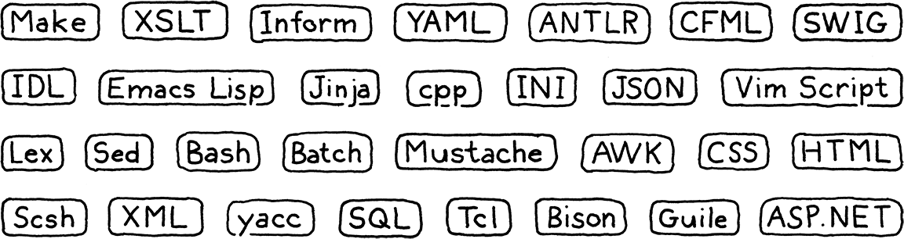

Introduction
This book is a work in progress!
×If you see a mistake, find something unclear, or have a suggestion, please let me know. To follow its progress, please join the mailing list:
(I post about once a month. Don’t worry, I won’t spam you.)
童话胜于现实，不仅是因为童话告诉我们巨龙存在， 更是因为它们告诉我们巨龙可以被打败。
尼尔·盖曼，卡洛琳（《鬼妈妈》）
很高兴我们能一起携手开启这段旅程。这是一本关于如何实现程序语言解释器的书。 这也是一本关于如何设计一门程序语言的书。这是本我初入程序设计语言领域就想要拥有的书， 这是本我 10 年前就在我脑海中构思的书。
在这本书中，我们将一步一脚印地为一门五脏俱全程序设计语言实现两枚解释器（Interpreters）。 我会预设这是你初次涉足程序设计语言开发领域，所以你不需要有任何的心理负担。我将详细阐述构建 完整、可用、高效的语言解释器所需要的每一个基本概念及其代码实现。
为了将两枚解释器的完整实现塞到一本书中而又不使得该书变得臃肿不堪，我选择不在编译理论部分着墨过多。 当我们逐步搭建起编译系统的各个部分之时，我再向你介绍关于这部分的历史与其背后的概念。 我会努力让你理解那些在鸡尾酒晚会上的程序设计语言研究者们所说的“行话“，相信你很快就能理解适应这些“术语“了。
在大部分情况下，我们都将绞尽脑汁先让我们的程序运行起来。这并不意味着理论不重要， 能够正确且形式化地推导语法和语义是开发程序设计语言一项至关重要的技能。 但是，我个人还是喜欢边做边学。通读大段大段充斥抽象概念的段落并充分理解其含义对我来说实在是太过困难， 但如果让我写几行代码，跑一跑，跟踪 debug 一下，我很快就可以掌握它。
这也是我对你的期望。我希望你通过动手实操，对一门真正程序设计语言的诞生过程留下一个坚实的印象，如此一来，以后当你在阅读其他更具理论性的书籍著作时，这些核心概念将深深镌刻进你的大脑，使得你可以更加充分地理解它们。
1 . 2为什么要学习这玩意儿？
似乎每一本关于编译原理的书都会在开头简介部分来上这么一段，告诉读者为什么要学习编译原理。 我不知道造成这种“存在性怀疑“的程序设计语言是什么。
我敢肯定地说，你们中的大多数人创造出一门被广为使用的通用程序设计语言的可能性微乎其微， 毕竟，即使把这个世界上被广为应用程序语言的设计者们都拉出来，还塞不满一辆大众巴士呢， 如果学习编译原理的唯一理由就是要加入这群精英，创造出世界流行的程序设计语言，这无疑令人费解。 幸运的是，事实并非如此。
1 . 2 . 2小众语言无处不在
对于任何一支成功的通用程序设计语言，都会有上千种其他语言与其相辅相成。我们通常将它们称为“小众语言“。 但这一称呼其实并不准确，更为确切的称呼应该是：领域特定语言（Domain-specific Languages、DSL）。 领域特定语言被设计用以完成某些特定任务，如：应用程序脚本、模版引擎、标记格式、配置文件等。

几乎每个大型软件项目都需要用到其中的一个或多个。 如果可以的话，最好是复用一支已经存在的领域特定语言，而不是自己再创造一个， 因为一旦使用自己编写的小众语言替换，在文档撰写、程序调试、编辑器支持、语法高亮等方面， 你都将面临许多不必要的麻烦。
但如果当现有的领域特定语言代码库无法满足你的需求时，你还是需要勉为其难地手写一枚解析器或者类似的工具以满足需求。即使你想要重用一些现有的代码，你也将不可避免地对其进行调试和维护，深入研究其原理。
1 . 2 . 4着实锻炼编程技艺
长跑运动员时常会在脚踝绑上重物，或是去到在氧气稀薄的高海拔地区训练自身。 当他们卸下重负，来到富氧地区比赛时，他们的四肢变得轻盈，脚步变得稳健，跑得更快更远。
实现一门程序设计语言是对编程技艺一次极好地磨练。代码实现复杂艰深，对代码性能也有着至关重要的要求。 你必须很好地掌握递归、动态数组、树、图、哈希表等关键技术。 你也许经常在日常编程中使用哈希表数据结构，但你是否真正理解它了呢？ 当我们从头开始完成语言解释器之后，我保证你对这些基础算法数据结构的认知会更上一层楼。
尽管我想努力向你传达，实现一枚程序语言解释器并不如你想象的那般困难，但实际上这仍是一个巨大的挑战。 克服它，你会变得更加强大，在日常工作中，你也将更加聪明地运用算法与数据结构。
1 . 2 . 6另一个原因
最后一个原因我其实有点难以启齿，因为这是我内心深处最为真切的想法。 在我还是一个孩童时，就觉得程序设计语言非常的神奇，我一个字符一个字符敲下了一支 BASIC 程序， 程序正常运行，但我却不知道 BASIC 语言是如何工作的。
后来我上了大学，同上编译原理课的同学对我说，程序语言黑客简直是另一种人类， 就像会施展奥术的巫师一样，说这话时脸上还充满了敬畏之情。
那可真是幅迷人的画面。但我并不觉得我自己像个巫师，也许我天生就缺少一些加入巫师集团的特质。 从那时起，我被程序设计语言深深吸引，我在学校笔记本上涂满了拼凑而成关于程序语言的关键字。 在往后数十年时间里，我都在学习它们，探索着程序设计语言“魔盒“背后的奥秘。
说不定，你也与我有同样的感受呢。
当我真正开始动手制作一枚小编译器的时候，我意识到，这其中并没有什么“神奇魔法“，仅是一堆代码罢了， 而创造程序语言的也仅是普通人而已。
当然，实现一门程序设计语言多少会涉及一些你在外头很少见到的技术，其中某些部分确实有点难度， 但也不会比你一路走来所克服的困难难上多少。如果你曾对程序设计语言和编译原理心生畏惧， 希望这本书可以帮你克服恐惧，为你带来些许勇气。
说不定，下个知名程序设计语言的创造者就是你呢！
1 . 4本书是如何组织的
本书主要分为三个部分，你目前正在阅读的正是第一部分。第一部分通过几个章节带你快速进入程序设计语言的世界，为你讲解程序设计语言开发者们时常挂在嘴边的那些“术语“。第一部分还将带你认识 Lox ， 我们将要实现的程序设计语言。
之后的两大部分，都将分别带你构建一支完整的 Lox 解释器。这两部分的章节组织也大同小异，每章取一个语言特性，讲解其背后的核心概念，带你完整实现一遍代码。
为了将两枚解释器的庞杂内容切分成各个内容适中的篇章，让各个篇章之间尽可能相对独立不相互影响， 可着实费了我一番功夫。从第一个篇章开始，你就可以写出一支可以运行的解释器程序，随着章节推进， 这支小解释器程序逐步成长，羽翼渐丰，直到你完整实现出全部功能。
除了内容丰富、语句清晰的主体内容外，每个章节还会包含以下数个讨喜的部分：
1 . 4 . 2代码
既然我们要开发一枚货真价实的程序语言解释器，代码部分自然是不可或缺的啦。任何一行重要的实现代码都将被包含其中详细阐释。贴出的代码片段还会贴心地告诉你应在何处插入这段代码。
许多讲授程序设计语言开发的书籍都会借助一些类似Lex、Yacc这样的编译器编译程序（Compiler-compilers），让编译器编译程序帮忙自动生成一些源代码文件， 这么做有人说好，有人说不好，争论双方各执己见，各有各的道理。
在这本书中，我们不会使用这些辅助工具。我想确保在实现程序设计语言的道路上不会有任何黑暗的角落和神奇的魔法，我们将完完整整地写下全部代码，你也将充分理解写下的每一行代码是如何在解释器里工作的。
写在书中的代码与“真实世界“的代码总会有一些不同，某些代码风格也不是编写可维护软件代码的最佳方式。如果被你发现，比如说：漏写了个private，声明了一个全局变量，还请不要见怪。我力求代码简洁易懂，而且，这里书页的宽度也比不上集成开发环境（IDE）。
另外，书中的代码不会带有太多的注释，这是因为每行代码的意义都会周围的几个段落被详细地解释清楚。如果以后你也提笔撰写一本自己的技术书，我也推荐使用这样的技术文风：少注释，多解释。
虽然书中包含了每一行需要实现的代码和对代码的解释，但我没有加入如何让解释器程序编译运行起来的描述性文本。这是因为我相信你有能力快速撰写一份Makefile或是使用 IDE 建立一个工程项目，从而让代码运行起来，相信我，这不是什么难事，而且，描述如何让程序编译执行的文字很快就会过时，新的代码工具层出不穷。我希望这本书能像白兰地酒那样，越老越醇香。
1 . 4 . 4代码片段
除了包含实现解释器所需的代码之外，本书还会包含一些描述精准的代码片段。这是因为我需要让解释器程序在缺失某些主体功能的情况下也能正常运行，所以我会使用代码片段告诉你如何添加上临时性代码，以及后续如何替换掉它们。
一份典型的代码片段长这样：
default:
in scanToken()
replace 1 line
if (isDigit(c)) {
number();
} else {
Lox.error(line, "Unexpected character.");
}
break;
可以看到，在代码片段的中心位置，有需要添加的代码，这部分代码被着重显示。新增代码上下环绕几行颜色偏淡已经存在的上下文代码。侧边会有个简短提示，告诉你应在哪个文件的哪个位置插入代码。如果提示文字中有诸如“替换_行“的描述，这就表示你需要先移除此处的旧代码，再替换上代码片段中的新代码。
1 . 4 . 6旁注
旁注通常包含一些简单草图、章节历史背景、相关主题的参考内容以及对其他领域的建议，忽略这部分内容完全不影响你阅读接下来的章节内容。所以，你可以放心地忽略它们。忽略这部分的内容我也不会怪你，只是，我可能有点难过啦。
1 . 4 . 8挑战
在每个章节的结尾部分，会带有几道练习题。与教科书后的习题集不同，本书的练习题旨在帮助你复习你已经学到的内容，引导你去思考章节内容之外的东西。习题迫使你走出既定的引导路线去探索更多，这对你研究其他语言的功能实现大有裨益。不是有句话这么说嘛：你要勇于跳出舒适区。
努力克服这些挑战，你必然会有新的感悟与收获，亦或是，你也可以简单地跳过它们，继续前进。
1 . 4 . 10设计笔记
大多数描述开发“程序设计语言“的书都将视线聚焦于如何按照定义严格实现一门语言，却很少谈及一个语言特性背后的设计思路，为什么这门语言要如此设计。实现程序语言的过程非常有趣，因为一门程序语言的语法规范是经过严格定义的。做我们程序员们的似乎总是很喜欢被严格定义清楚的东西，非黑即白，非零即一，泾渭分明，毫无歧义。
就我个人而言，我觉得这个世界只需要实现 FORTRAN 77 这一门语言就足够了。如果有一天，你自己开始着手设计一门全新的程序语言，这时候，一些考虑“人”的因素就会显示出来，比如：哪些语言特性简单易学，如何平衡语言的创新性与相似性，语法上是否更应该注重可读性，这门语言的目标人群是哪些等等等等。
上述的这些都是你的新语言能否成功的重要因素。我也希望你的语言能大获成功，所以在部分章节的结尾，我会留下““设计笔记”，一篇从程序语言使用者视角出发探讨程序语言设计的小短文。当然，我个人并不是这方面的专家，写得不好也请别见怪，糊上一把盐吞下去吧，味道能好不少。如果我写的这些内容能够发人深思，那我的目的也就达到了。
1 . 5The First Interpreter
We’ll write our first interpreter, jlox, in Java. The focus is on concepts. We’ll write the simplest, cleanest code we can to correctly implement the semantics of the language. This will get us comfortable with the basic techniques and also hone our understanding of exactly how the language is supposed to behave.
Java is a great language for this. It’s high level enough that we don’t get overwhelmed by fiddly implementation details, but it’s still pretty explicit. Unlike in scripting languages, there tends to be less complex machinery hiding under the hood, and you’ve got static types to see what data structures you’re working with.
I also chose Java specifically because it is an object-oriented language. That paradigm swept the programming world in the ’90s and is now the dominant way of thinking for millions of programmers. Odds are good you’re already used to organizing code into classes and methods, so we’ll keep you in that comfort zone.
While academic language folks sometimes look down on object-oriented languages, the reality is that they are widely used even for language work. GCC and LLVM are written in C++, as are most JavaScript virtual machines. Object-oriented languages are ubiquitous, and the tools and compilers for a language are often written in the same language.
And, finally, Java is hugely popular. That means there’s a good chance you already know it, so there’s less for you to learn to get going in the book. If you aren’t that familiar with Java, don’t freak out. I try to stick to a fairly minimal subset of it. I use the diamond operator from Java 7 to make things a little more terse, but that’s about it as far as “advanced” features go. If you know another object-oriented language, like C# or C++, you can muddle through.
By the end of part II, we’ll have a simple, readable implementation. It’s not very fast, but it’s correct. However, we are only able to accomplish that by building on the Java virtual machine’s own runtime facilities. We want to learn how Java itself implements those things.
1 . 6The Second Interpreter
So in the next part, we start all over again, but this time in C. C is the perfect language for understanding how an implementation really works, all the way down to the bytes in memory and the code flowing through the CPU.
A big reason that we’re using C is so I can show you things C is particularly good at, but that does mean you’ll need to be pretty comfortable with it. You don’t have to be the reincarnation of Dennis Ritchie, but you shouldn’t be spooked by pointers either.
If you aren’t there yet, pick up an introductory book on C and chew through it, then come back here when you’re done. In return, you’ll come away from this book an even stronger C programmer. That’s useful given how many language implementations are written in C: Lua, CPython, and Ruby’s MRI, to name a few.
In our C interpreter, clox, we are forced to implement for ourselves all the things Java gave us for free. We’ll write our own dynamic array and hash table. We’ll decide how objects are represented in memory, and build a garbage collector to reclaim them.
Our Java implementation was focused on being correct. Now that we have that down, we’ll turn to also being fast. Our C interpreter will contain a compiler that translates Lox to an efficient bytecode representation (don’t worry, I’ll get into what that means soon), which it then executes. This is the same technique used by implementations of Lua, Python, Ruby, PHP, and many other successful languages.
We’ll even try our hand at benchmarking and optimization. By the end, we’ll have a robust, accurate, fast interpreter for our language, able to keep up with other professional caliber implementations out there. Not bad for one book and a few thousand lines of code.
Challenges
-
There are at least six domain-specific languages used in the little system I cobbled together to write and publish this book. What are they?
-
Get a “Hello, world!” program written and running in Java. Set up whatever makefiles or IDE projects you need to get it working. If you have a debugger, get comfortable with it and step through your program as it runs.
-
Do the same thing for C. To get some practice with pointers, define a doubly linked list of heap-allocated strings. Write functions to insert, find, and delete items from it. Test them.
Design Note: What’s in a Name?
One of the hardest challenges in writing this book was coming up with a name for the language it implements. I went through pages of candidates before I found one that worked. As you’ll discover on the first day you start building your own language, naming is deviously hard. A good name satisfies a few criteria:
-
It isn’t in use. You can run into all sorts of trouble, legal and social, if you inadvertently step on someone else’s name.
-
It’s easy to pronounce. If things go well, hordes of people will be saying and writing your language’s name. Anything longer than a couple of syllables or a handful of letters will annoy them to no end.
-
It’s distinct enough to search for. People will Google your language’s name to learn about it, so you want a word that’s rare enough that most results point to your docs. Though, with the amount of AI search engines are packing today, that’s less of an issue. Still, you won’t be doing your users any favors if you name your language “for”.
-
It doesn’t have negative connotations across a number of cultures. This is hard to be on guard for, but it’s worth considering. The designer of Nimrod ended up renaming his language to “Nim” because too many people remember that Bugs Bunny used “Nimrod” as an insult. (Bugs was using it ironically.)
If your potential name makes it through that gauntlet, keep it. Don’t get hung up on trying to find an appellation that captures the quintessence of your language. If the names of the world’s other successful languages teach us anything, it’s that the name doesn’t matter much. All you need is a reasonably unique token.